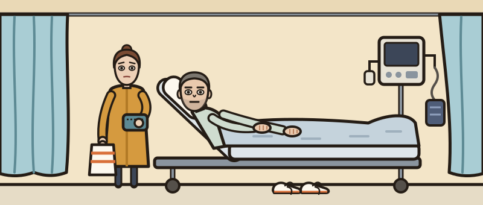

My legs have gone.
Wednesday, 10:40 · Emergency department, medical take
“46-year-old male. Struggling to mobilise over the last couple of weeks, has been falling. Now unable to get out of bed. Wife reports speech changed over the last 24 hours. Speech check positive. Blood sugar 9.4.”
Background on the system: hypertension · type 1 diabetes · hyperlipidaemia · functional neurological disorder (2023).
- 1Work him up in stages: history, then examination, then investigations. You can step back to a stage you have opened; the case counts how often you do.
- 2The bedside trolley is a tap. Everything else you type. Every move costs ward time.
- 3Commit one diagnosis once a result is back. Then write his plan as you would in the notes, and answer ten questions.

Ask what you need. Each question costs half a minute of ward time.
Bedside tests are on the trolley. Everything else is ordered on ICE — type it the way you would at the terminal.
You've called it. Now write the plan — free text, the way you'd write it in the notes. Nothing is listed; what you write is what gets done.
Commit your diagnosis
One diagnosis. Name it the way you'd write it in the notes.
Right.
Now write his plan.
You called it wrong.
Ten questions
One at a time, thirty seconds each.